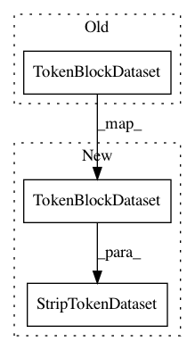

88daeb748b31ad27de6c34630968e0fc191e4326,fairseq/tasks/language_modeling.py,LanguageModelingTask,build_dataset_for_inference,#LanguageModelingTask#Any#Any#,200
Before Change
(or bos if `--add-bos-token` is set) and we append a <pad> to target.
This is convenient both for generation with a prefix and LM scoring.
dataset = TokenBlockDataset(
src_tokens,
src_lengths,
block_size=None, // ignored for "eos" break mode
pad=self.source_dictionary.pad(),
eos=self.source_dictionary.eos(),
break_mode="eos",
)
tgt_dataset = AppendTokenDataset(
dataset,
token=self.source_dictionary.pad()
)
After Change
(or bos if `--add-bos-token` is set) and we append a <pad> to target.
This is convenient both for generation with a prefix and LM scoring.
dataset = StripTokenDataset(
TokenBlockDataset(
src_tokens,
src_lengths,
block_size=None, // ignored for "eos" break mode
pad=self.source_dictionary.pad(),
eos=self.source_dictionary.eos(),
break_mode="eos",
),
// remove eos from (end of) target sequence
self.source_dictionary.eos(),
)
src_dataset = PrependTokenDataset(
dataset,
token=(
self.source_dictionary.bos()
In pattern: SUPERPATTERN
Frequency: 4
Non-data size: 3
Instances
Project Name: pytorch/fairseq
Commit Name: 88daeb748b31ad27de6c34630968e0fc191e4326
Time: 2020-04-14
Author: myleott@fb.com
File Name: fairseq/tasks/language_modeling.py
Class Name: LanguageModelingTask
Method Name: build_dataset_for_inference
Project Name: pytorch/fairseq
Commit Name: 9d7725226da3fcd9c5d1ac02473289f53cd7dd78
Time: 2019-12-18
Author: myleott@fb.com
File Name: fairseq/tasks/language_modeling.py
Class Name: LanguageModelingTask
Method Name: build_dataset_for_inference